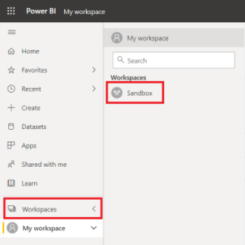
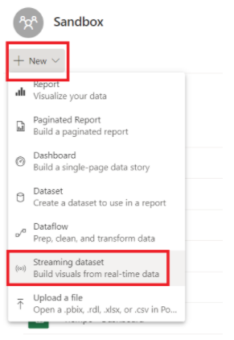
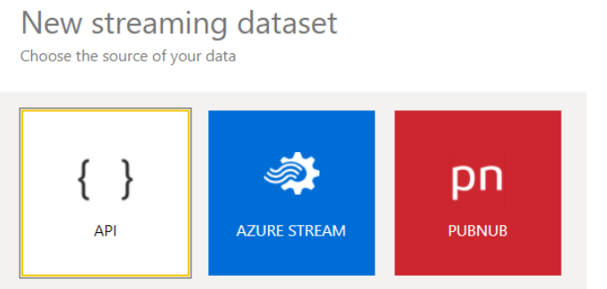
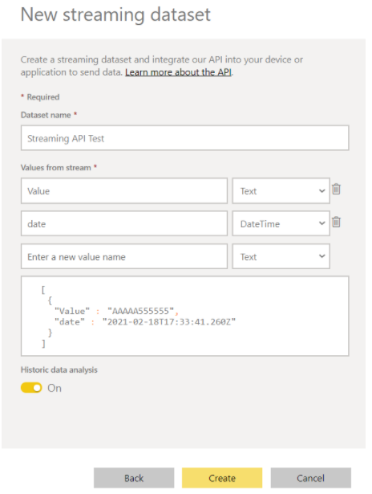
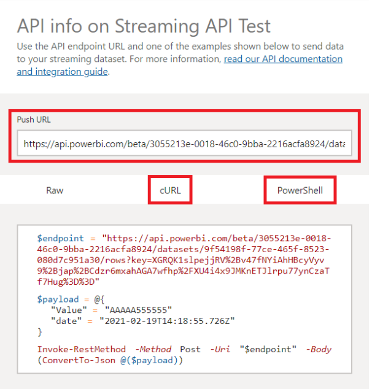
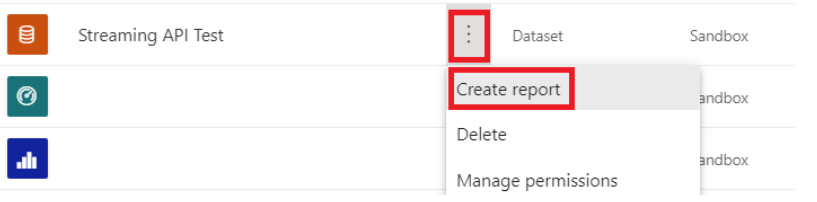
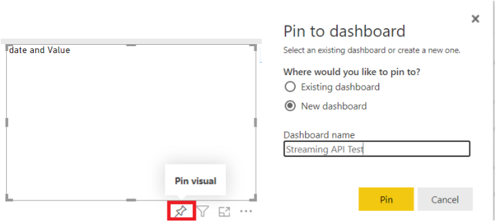
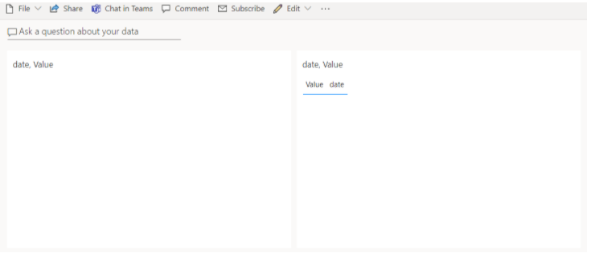

PowerBI Streaming API
Purpose
This document defines the overall process required to create a Streaming API in PowerBI, that can help us to create real time visualizations that can provide value to the business.
Streaming API
To create a streaming API we need to access PowerBI web services, you won't be able to continue with this SOP with the desktop application.
-
Select the workspace you will use to create the API.
 -
Select on “New” and then in “Streaming dataset”.
 -
On the next screen select “API”.
 -
Create the API, set a name and the values / data type, enable historic data analysis (this will enable a internal database to create visualizations in PowerBI).
 -
Once you get to this point you will get the API information, and some lines of code that you can use to push data to the API..

Preparing Visualizations
-
Once the API is configured we can start creating our visualizations, on the main workstation page go to your dataset and click on the 3 points button, and then select the option “Create report”.
 -
Create the visualization you want to display with the data you have, consider that to this point the visualizations are going to be empty. For this example I will only use 2 visualizations: a line chart and a table, once you create them send them to a dashboard so we can see how the data flow works. Click on the option “Pin visual” and then select the dashboard you want to add the visualization.
 -
Once you are done that the dashboard will be ready to display the data once the script is set.

Creating the script
-
Now we can implement the script to push data from the source (sensor, dataset, ETL, etc) to the API, for this example I will use PowerShell and random values to push to the API. You can take the API data from PowerBI and implement it to your code, in my example I create a cycle that will run for 2 minutes and send data every 5 seconds.
$endpoint = "https://api.powerbi.com/beta/" --Place the URL THAT PowerBI Provide $timeout = new-timespan -Minutes 2 $sw = [diagnostics.stopwatch]::StartNew() while ($sw.elapsed -lt $timeout){ $payload = @{ "Value" = Get-Random -Maximum 100 "date" = Get-Date -Format "dddd MM/dd/yyyy HH:mm:ss K" } write-host $payload.Values Invoke-RestMethod -Method Post -Uri "$endpoint" -Body (ConvertTo-Json @($payload)) start-sleep -seconds 5 } write-host "Timed out" -
Create the visualization you want to display with the data you have, consider that to this point the visualizations are going to be empty. For this example I will only use 2 visualizations: a line chart and a table, once you create them send them to a dashboard so we can see how the data flow works. Click on the option “Pin visual” and then select the dashboard you want to add the visualization.
-
Once you are done that the dashboard will be ready to display the data once the script is set.